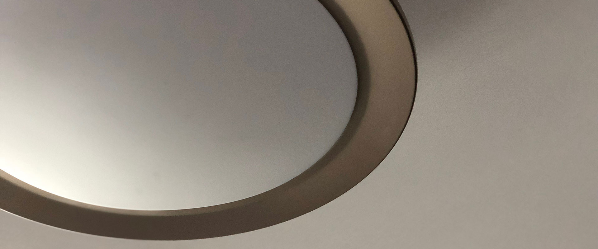
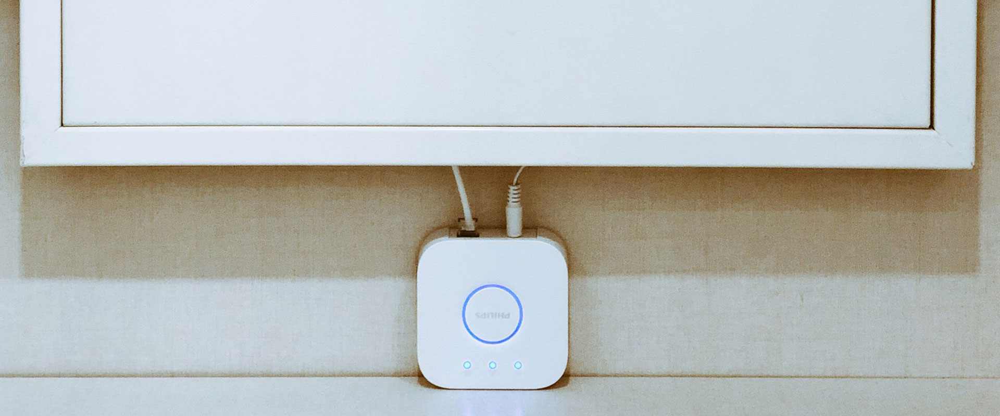
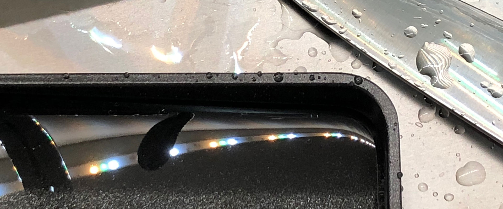
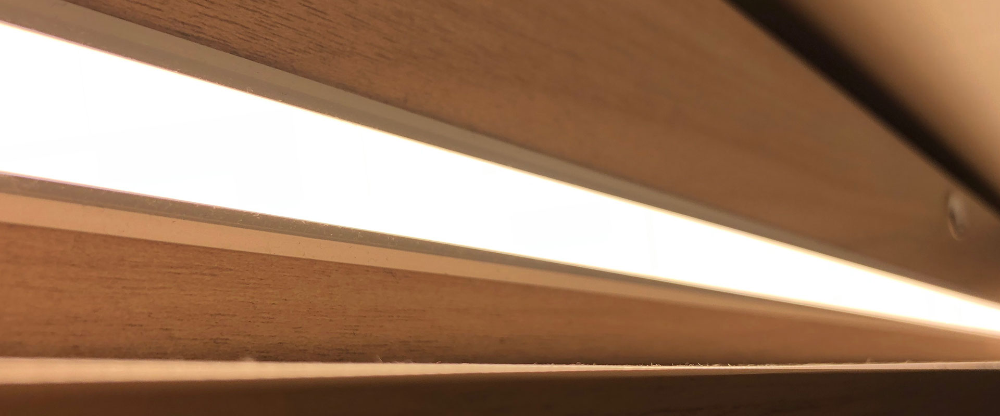
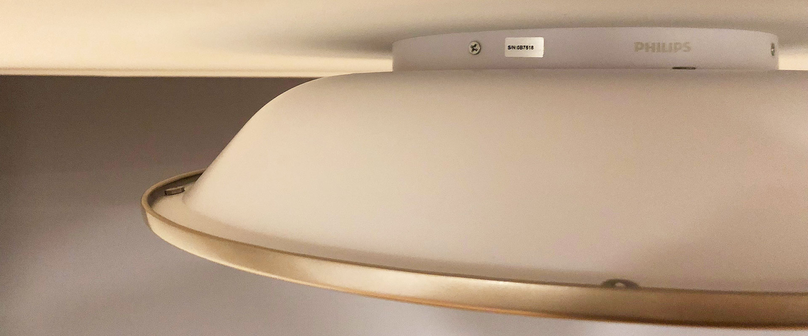
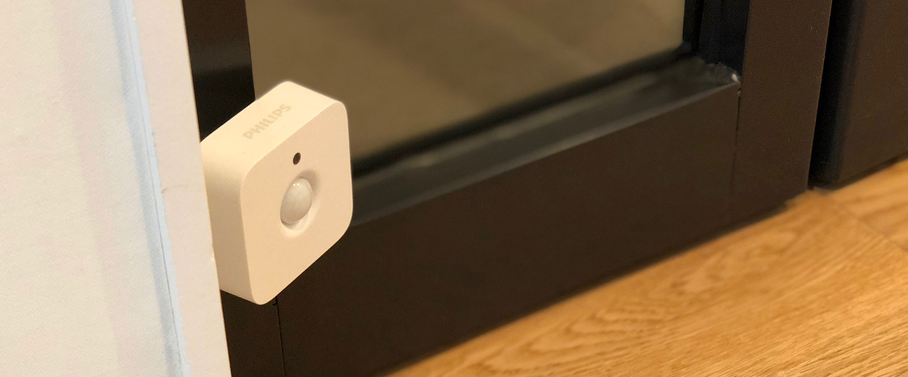

이번에 이사하며 필립스의 스마트 조명 시스템인 휴(Hue)를 사용하며 알게 된 몇 가지 내용을 정리해본다.
이번에 이사하며 필립스의 스마트 조명 시스템인 휴(Hue)를 사용하며 알게 된 몇 가지 내용을 정리해본다.
0. 휴에 대해 잘 아는 사람은 별로 없다.
천장등 무스카리, 다운라이트 아펠리온 등을 시공했는데, 한국에는 2018년 1월에 출시된 제품이라 제대로 알고 있는 사람이 없었다. 필립스 코리아의 공식 대리점 중 하나인 정광조명산업을 통해서 구매했는데, 해당 업체도 필립스 휴의 설치와 운용, 통신 방법에 대해 정확히 알고 있지는 못해 베타 테스트하는 기분으로 설치했다.
필립스 휴는 저전력, 저가격의 무선 네트워크 표준인 ZigBee(IEEE 802.15)를 이용한 필립스 조명 시스템의 통칭이다. 해당 시스템의 제어를 담당하는 브릿지와 전구/악세사리 사이의 통신에 ZigBee를 사용하고, 브릿지 자체는 유선 이더넷 통신을 사용한다.
- 휴 브릿지는 무선으로 연결할 수 없는가 (Reddit)
- 휴 브릿지를 해킹하여 Wi-Fi 연결을 가능하게 (Medium)
즉, 휴를 사용하기 위해서는 기본적으로 유선 네트워크와 이에 연결된 무선 액세스 포인트가 필요하다.
1. 다운라이트와 천장 조명은 다양한 색상 표현이 안된다.
‘휴’라는 이름 자체가 색상을 의미하는 단어지만, Hue White ambience 시리즈 제품들은 2000K ~ 6500K 사이의 색 온도만 조정 가능하다. Hue White and Color 시리즈에 속하는 제품들만 휴 광고에서 보여지는 다양한 색상 표현이 가능하다.

2. 라이트스트립은 연장하면 고주파가 들린다.
라이트스트립만 단독으로 설치한 경우에는 고주파가 들리지 않는다. 하지만 라이트스트립 플러스를 통해 연장하면 할수록 더 큰 소음이 들리게 된다. 필립스 코리아 방문 기사님을 통해 확인한 바에 따르면 현재까지는 제품 교환으로도 해결할 수 없는 문제라, 다음 제품이 나오기를 기다리고 있다. 현재 상태로 사용하려면 어댑터를 벽이나 천장 안쪽으로 밀어넣지 않는 한, 실사용이 어려운 수준이다.
3. 디머 스위치의 디밍은 실제로는 잘 안쓰게 된다.
디머 스위치의 클릭감이 분명하지 않아 아쉬움이 있고, 디밍을 위해 계속 +/- 버튼을 누르고 있어야 하는 불편함이 있다. 과거 로터리 방식의 디머와 같이 원하는 밝기로 한 번에 조절될 수 있으면 좋겠다.
4. 탭 스위치는 배터리가 필요 없다.
카페의 자동 유리문 등에 부착되어 사용되는 스위치와 같이 내장 배터리 없이 눌리는 힘으로 전력을 생산하여 신호를 보낸다. 당연한 얘기지만 탭 스위치를 제외한 디머 스위치, 동작 센서 등은 배터리가 필요하다.
5. 브릿지는 최대 50개의 전구, 10개의 악세사리만 지원한다.
설치 전에 필요한 조명 개수를 세어보니 50개가 넘어, 대리점에서 브릿지가 2개 이상 필요하다는 얘기를 들었다. 특별한 불편함이 없을 것이라는 대리점의 의견과 달리 한 공간에 브릿지가 2개 이상인 경우 매우 불편하다.
- 앱에서는 한 번에 하나의 브릿지만 선택할 수 있다.
- 다른 브릿지의 조명을 조작하기 위해서는 설정 탭에서 브릿지를 전환부터 해야 한다.
- 앱 뿐만 아니라 위젯도 마지막에 선택된 브릿지에 포함된 위젯만 표시된다.
- Hue account 페이지에서도 하나의 브릿지만 선택할 수 있다. 전환하기 위해서는 Unlink 하고 다시 등록을 해야 한다.
위젯을 통해 제어하거나 자주 조작하는 조명들을 주 브릿지에 붙이고, 센서로 동작하는 조명은 다른 브릿지에 붙이는 등의 선택이 필요하다. 
6. 전원을 완전히 내렸다 올리면 기본 상태로 돌아간다.
기존 스위치를 제거하지 않은 상태로 휴 스위치들을 같이 사용하고 있는데, 실수로 기존 스위치를 내려 완전히 전원을 끊은 경우 다시 켜면 마지막 상태가 아니라 기본 상태로 켜진다. 예를 들어, 아펠리온의 경우 Concentrate(주광색)인 상태로 바꾼 후에 전원을 끊었다 다시 켜면 Relax(전구색)로 켜진다.
7. 라이트스트립을 주방에서 쓸 경우 주의점.
스트립에 설치된 다수의 LED 앞쪽으로 별도의 디퓨저가 없어, 주방 간접등으로 사용하는 경우 설거지를 할 때 물이나 금속 냄비 등에 LED가 아래 사진과 같이 그대로 반사되어 눈이 아프다. 
일반적인 간접등의 경우는 빛의 퍼짐을 위해 디퓨저가 설치되어 아래와 같이 LED가 직접 보이지 않고, 고르게 빛이 퍼지는 것을 도와준다. 
8. 조명을 설치하기 전에 시리얼을 기억해두자.
무스카리 1대와 아펠리온 1대가 조명 검색에서 표시되지 않아, 조명 본체에서 시리얼을 확인하고 수동으로 등록한 후에야 찾을 수 있었다. 모든 조명을 설치하기 전에, 평면도에 시리얼을 표시해가며 설치해두면 나중에 두 번 고생하지 않을 수 있다. 
9. 하나의 조명은 하나의 방에만 할당된다.
하나의 조명을 여러 방에 할당하여 제어할 수 없다. 필요한 경우 물리적으로 하나의 방을 논리적으로 나누어진 여러 방으로 설정해야 한다.
특별한 경우겠지만, 복도에 10개의 아펠리온과 양 끝에 2개의 동작 센서를 위치시켜 중앙의 조명은 양 쪽의 센서에서 같이 제어하려고 했지만 복도의 10개 조명을 하나의 방으로 설정한 기본 상태에서는 불가능했다.
- 하나의 조명은 하나의 방에만 할당된다.
- 하나의 악세사리는 조명 단위가 아닌 방 단위로만 조작한다. (최대 4개)
이 문제를 해결하기 위해 복도를 아래와 같이 나누었다.
- 복도 1: 서쪽의 3개 조명
- 복도 2: 중앙의 4개 조명
- 복도 3: 동쪽의 3개 조명
서쪽에 위치한 센서에서는 복도1과 2를, 동쪽에 위치한 센서에서는 복도 2와 3을 조작하도록 하여 문제를 해결하였다. 단, 서쪽 센서로 켜진 복도2(중앙 4개) 조명이 동쪽 센서로 다시 밝아진 경우에도, 서쪽 센서의 타이머에 따라 같이 꺼지는 사소한 아쉬움이 있다. 
10. 휴는 웹에서 제어할 수 없다.
필립스에서 공식으로 제공하는 웹 제어 패널이 없다. https://account.meethue.com가 공식 사이트지만 계정을 생성하고 로그인을 해도 제어할 수 있는 기능이 제공되지 않는다.
필립스 휴 개발자 사이트를 통해 SDK와 개발 정보를 확인하여 직접 제어하는 것도 가능하겠지만, 오픈소스인 https://github.com/blitzcode/hue-dashboard 등을 라즈베리파이에 설치하고 직접 운영하는 것이 현재로는 최선으로 보인다.